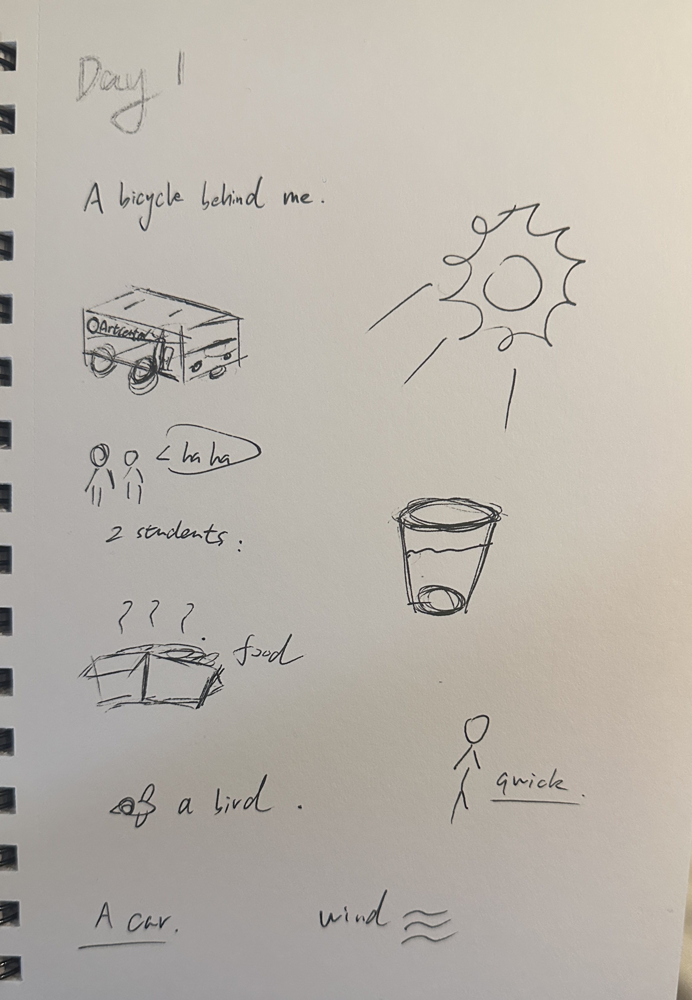
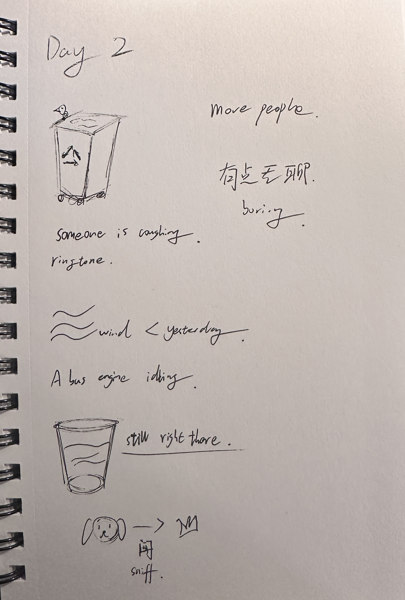
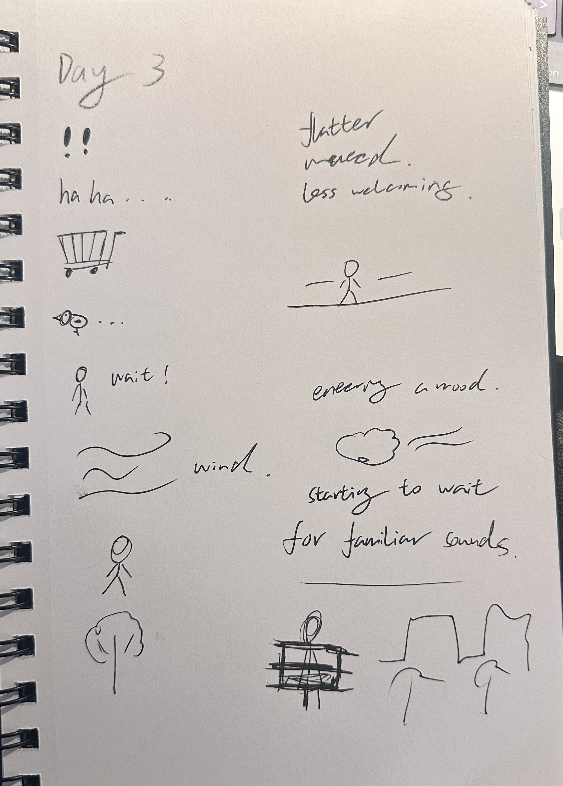
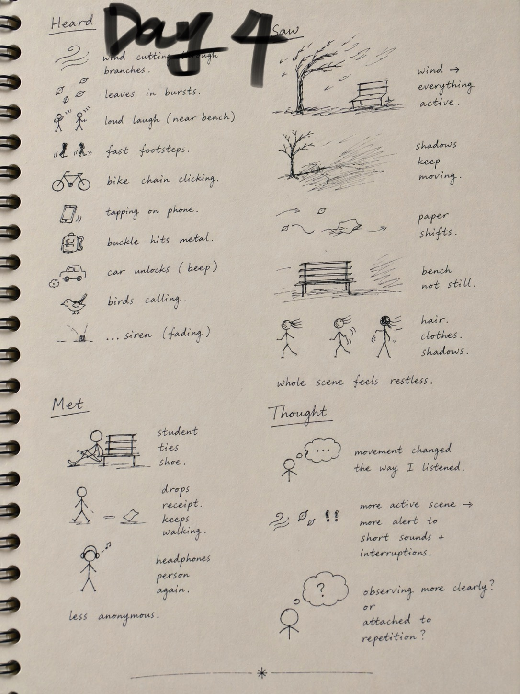
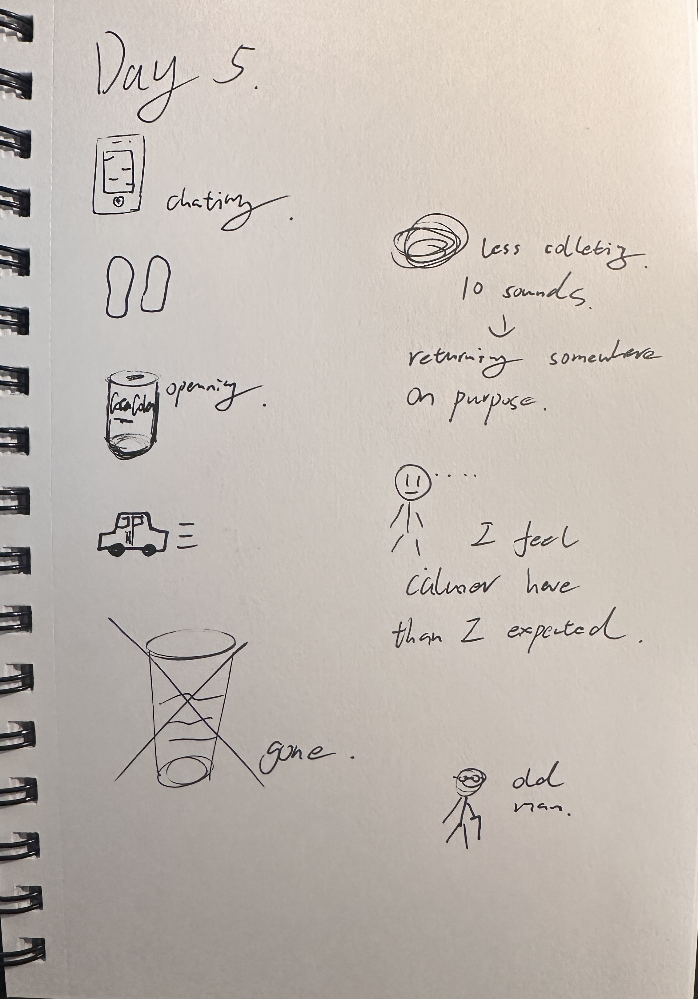
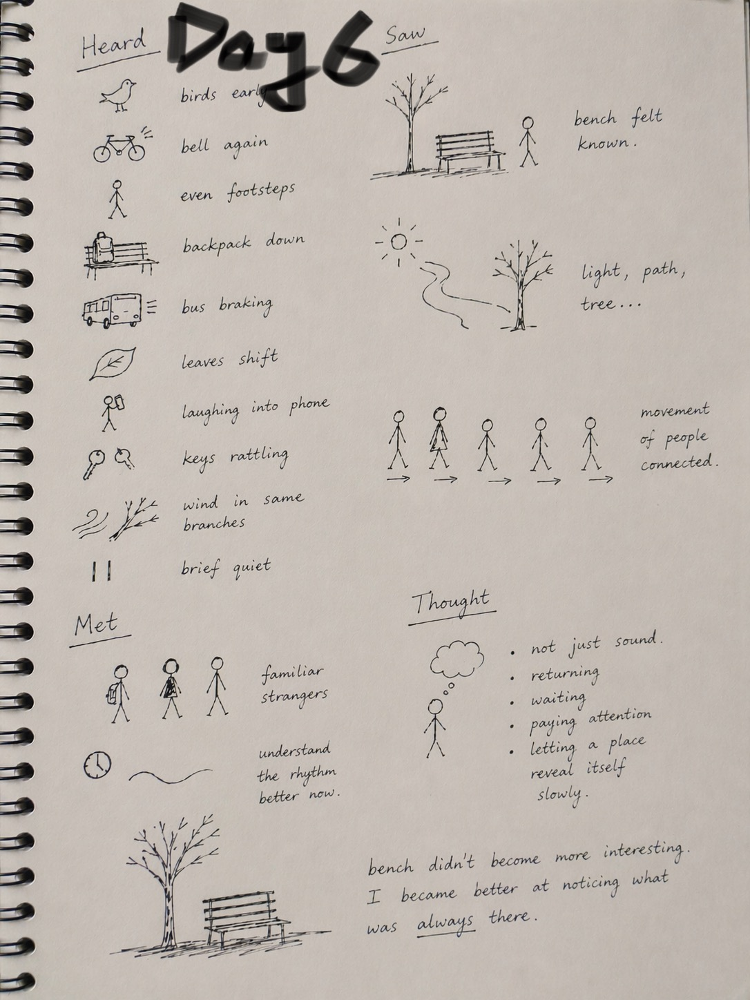
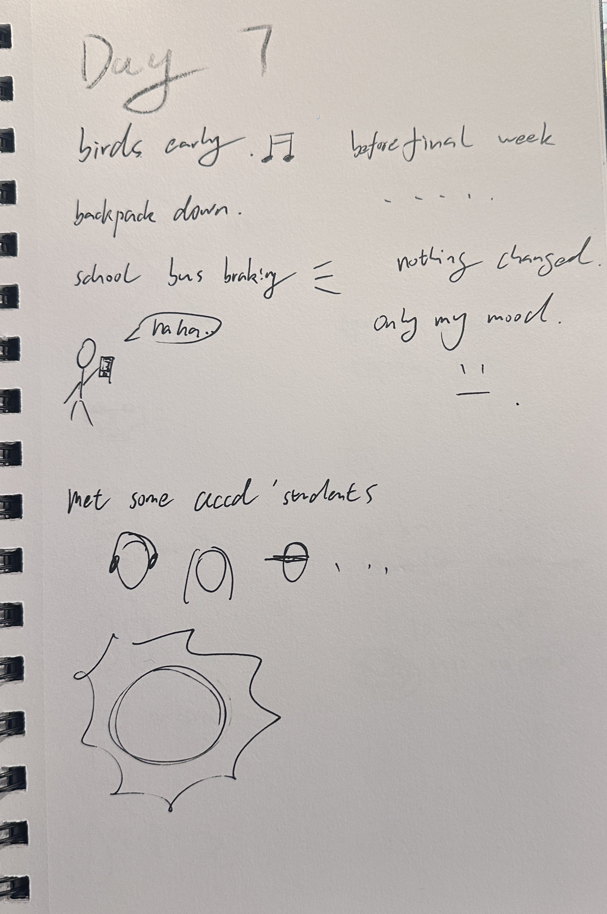

DAY 1
Cool and clear

Heard
- A bicycle bell behind me.
- Shoes brushing across the pavement.
- A bus stopping and releasing air.
- Leaves scraping the ground.
- Two students laughing as they passed.
- A distant airplane.
- Someone opening food nearby.
- A car door shutting hard.
- Birds calling from above.
- Wind moving through dry branches.
Saw
At first, the bench felt ordinary.
Almost invisible.
Sunlight touched only one side.
The other half stayed in shadow.
A plastic cup rested near one of its legs.
People crossed the space quickly,
as if the bench belonged only to passing time.
Met
No direct conversation.
One student slowed down and looked at me briefly.
Someone wearing headphones passed by twice.
Thought
I felt slightly awkward sitting still on purpose.
Without my phone, time stretched.
I kept waiting for something important to happen.
Nothing dramatic did.
Instead, I noticed how full silence already was.
"The place seemed ordinary only because I usually move through it too fast to notice it."
DAY 2
Slightly warmer

Heard
- A skateboard rattling over cracks.
- A short phone ringtone.
- A bird dropping near the trash can.
- Low conversation from two people standing nearby.
- A bus engine idling.
- The soft drag of a backpack against the bench.
- Footsteps in different rhythms.
- A dog tag jingling.
- A sudden cough.
- Wind moving more softly than yesterday.
Saw
The same plastic cup was still there.
The light felt warmer.
It spread farther across the ground.
A dog stopped to sniff the grass.
More people seemed willing to slow down.
The place felt less cold,
less distant,
more available.
Met
Someone asked,
“Is anyone sitting here?”
They sat at the far end for less than a minute.
A dog walker smiled without speaking.
The same headphones person appeared again.
Thought
I felt less self-conscious today.
The bench already carried a slight sense of routine.
I started noticing timing,
not just isolated sounds.
The space felt layered instead of random.
"Repetition made the place feel less public and a little more personal."
DAY 3
Cloudy

Heard
- Softer footsteps on damp ground.
- A short burst of laughter from far away.
- A rolling cart squeaking.
- A bird pecking near the bench.
- A zipper closing.
- A motorcycle in the distance.
- Someone saying, “wait for me.”
- Fabric rustling.
- The faint hum of traffic.
- Wind with a lower, colder tone.
Saw
Without direct sunlight,
the space looked flatter.
Colors felt muted.
The bench appeared less welcoming,
even though it had not changed.
Fewer people lingered.
Most moved quickly,
shoulders slightly raised against the cold.
Met
No direct interaction.
But I began recognizing movement patterns.
One person always walked fast without looking up.
Another paused near the same tree before moving on.
The place was beginning to collect recurring characters.
Thought
Today felt less like collecting material
and more like entering a mood.
Weather changed the emotional tone of the place.
I also realized I was starting to wait for familiar sounds,
almost as if I knew the scene already.
"The same bench can feel completely different when the light disappears."
DAY 4
Bright and windy

Heard
- Wind cutting through branches.
- Leaves moving in bursts across the concrete.
- A loud laugh close to the bench.
- Fast footsteps.
- A bicycle chain clicking.
- Someone tapping a phone screen.
- A backpack buckle hitting metal.
- A car unlocking with a sharp electronic sound.
- Birds calling more actively.
- A distant siren fading slowly.
Saw
The wind made everything look active.
Tree shadows kept moving.
Loose paper shifted across the ground.
The bench no longer felt still,
because everything around it was in motion.
Hair moved. Clothes moved. Shadows moved.
The whole scene felt restless.
Met
A student sat briefly to tie a shoe.
Another person dropped a receipt and kept walking.
I saw the headphones person again.
The place felt less anonymous because of that.
Thought
Movement changed the way I listened.
Because the scene was more active,
I became more alert to short sounds and interruptions.
I also started wondering
whether I was observing the site more clearly,
or simply becoming attached to its repetition.
"The bench stayed still, but the day around it felt restless."
DAY 5
Mild and quiet

Heard
- A soft phone conversation.
- Hard-soled shoes clicking.
- A bird landing on the bench.
- Someone opening a drink can.
- Distant traffic blending into a low hum.
- A light cough.
- Fabric brushing against fabric.
- A backpack zipper opening and closing.
- Someone dragging their feet slowly.
- A brief pause in sound that made the next noise feel louder.
Saw
The space looked calm today.
There were fewer sudden movements.
The plastic cup was finally gone.
The bench appeared cleaner,
as if the area had been reset.
A patch of sunlight stayed on the seat longer than before.
Met
An older person sat on the opposite end of the bench.
We did not speak.
But the silence felt shared rather than empty.
Thought
By today, I was thinking less about collecting ten sounds
and more about what it means to return somewhere on purpose.
The bench felt familiar enough
that even a small change mattered.
I also noticed that I felt calmer here than I expected.
"Familiarity made small changes feel surprisingly important."
DAY 6
Slightly cold, overcast

Heard
- Fast footsteps cutting across the path.
- A bicycle passing without a bell.
- Someone sneezing twice.
- A short conversation about class.
- A bus door folding open.
- A loose poster flapping in the wind.
- Bird calls spaced far apart.
- A hard object dropping into a bag.
- Distant construction noise.
- The quiet static of the surrounding city.
Saw
Today the place felt more functional than poetic.
People moved through it efficiently.
Fewer slowed down.
Fewer looked around.
The bench seemed less like a destination
and more like part of a route.
The sky flattened everything into pale, low contrast.
Met
No close interaction.
But by now I recognized different kinds of passersby:
the hurried walker,
the distracted phone user,
the quiet passerby,
the person who always seems late.
Thought
Today I noticed my own drifting attention.
My focus kept breaking.
That, too, became part of the observation.
To notice a place
also means noticing when I fail to notice it fully.
"Observation is not constant focus; it also includes distraction, fatigue, and return."
DAY 7
Clear and balanced

Heard
- Birds starting before most people arrived.
- A bicycle bell again, echoing Day 1.
- Even footsteps from someone walking calmly.
- A backpack set down on the bench.
- A bus braking in the distance.
- Leaves shifting lightly.
- Someone laughing into a phone.
- Keys rattling.
- Wind moving through the same branches I had heard all week.
- A brief quiet moment before another wave of sound returned.
Saw
The bench no longer felt neutral.
It felt known.
I could immediately tell
what was different
and what remained the same.
The light, the path, the tree,
and the movement of people
all felt connected now.
Met
No dramatic encounter happened.
But repeated types of people
had turned the place into a scene populated by familiar strangers.
I understood the rhythm of the site better than I did on the first day.
Thought
On the final day,
I understood that the project was never only about sound.
It was about returning.
Waiting.
Paying attention.
Letting a place reveal itself slowly.
The bench did not become more interesting.
I became better at noticing what had always been there.
"The biggest change across seven days was not the bench, but my attention."
No Observation Record
There is no data for the selected date.